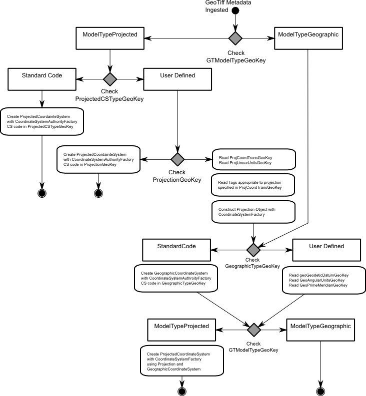

GeoTIFF Plugin¶
The gt-geotiff module in the plugin group provides access to the GeoTiff file format.
References
- http://www.jroller.com/jsight/entry/back_to_code_geotools_geotiff
- GeoTiffReaderTest.java
- GeoTiffWriterTest.java
Maven:
<dependency>
<groupId>org.geotools</groupId>
<artifactId>gt-geotiff</artifactId>
<version>${geotools.version}</version>
</dependency>
Example¶
You can use GeoTiff files directly using GridFormatFinder:
File file = new File("test.tiff");
AbstractGridFormat format = GridFormatFinder.findFormat( file );
GridCoverage2DReader reader = format.getReader( file );
You can also use GeoTiffReader directly:
File file = new File("test.tiff");
GeoTiffReader reader = new GeoTiffReader(file, new Hints(Hints.FORCE_LONGITUDE_FIRST_AXIS_ORDER, Boolean.TRUE));
You can use the reader to access a GridCoverage2D as normal:
GridCoverage2D coverage = (GridCoverage2D) reader.read(null);
CoordinateReferenceSystem crs = coverage.getCoordinateReferenceSystem2D();
Envelope env = coverage.getEnvelope();
RenderedImage image = coverage.getRenderedImage();
GeoTIFF Coordinate System Construction¶
What makes GeoTIFF useful is the ability to store extend, and coordinate reference system information in the metadata fields of a normal TIFF file.
The above “flowchart” describes the order in which the GeoTIFF plugin examines the GeoTIFF tags and Keys in order to construct a coordinate system to accompany the raster data.